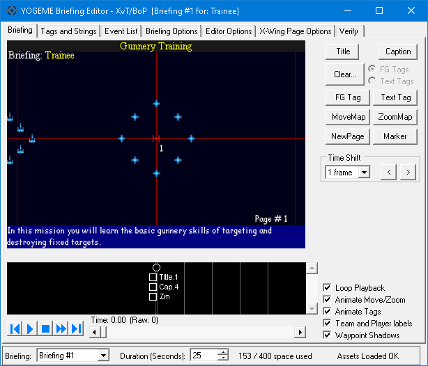
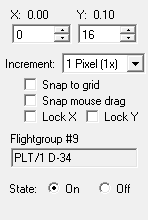
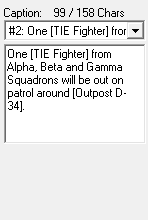
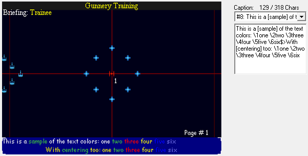
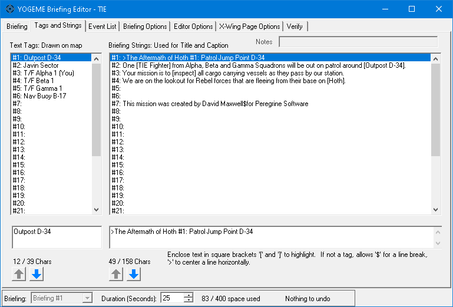
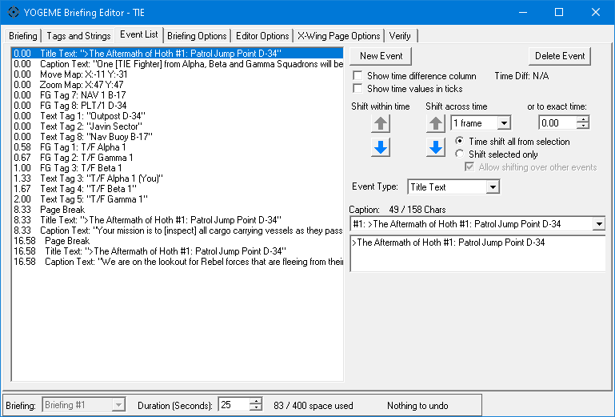
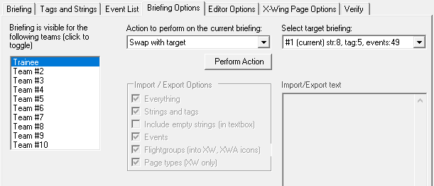

NOTE: The full manual for the briefing dialog is located here. It is far more comprehensive than anything listed in this document. It covers navigation, hotkeys, and explains all the controls and event nuances in more detail.
Opening the Briefing Dialog will bring you to the main Briefing Map tab.

This is the pre-mission briefing just before you fly. This will be a very brief overview of the editor and its main features.
The map screen is front and center, hard to miss. To the right of the map is the sidebar. Below the map is the timeline.
The sidebar changes dynamically depending on what is selected.
When nothing is selected, there are buttons to create events, time shift buttons that can add or remove time between events, and some quick toggle options that affect how the map is displayed.
When something is selected, there will be controls for manipulating the selected item.
At the very bottom, in the footer area, there is a list of briefings. XvT was designed for multiplayer teams, so it has 8 briefing slots.
The duration is how long the briefing will play before looping.
All events consume event space, and there's a limited amount. You normally won't have to worry about reaching the limit. Most briefings aren't even close.
Finally some status text.
On an empty briefing, the status text should say "Assets Loaded OK". If it doesn't, you need to assign the installation paths in YOGEME's Options menu. See setup in the main manual.
The status text may also report verification issues, to detect common problems in a briefing. As you make changes, it will describe how many of those changes can be undone.
This is what you will see in-game. It is nearly pixel accurate to the original game. It displays craft icons (flightgroups), is capable of highlighting flightgroups, displaying lines of text, as well as moving and zooming the map.
Although XvT targets a framerate of 24 fps, in practice it animates at approximately 21 fps, almost twice the speed of TIE Fighter.
The map canvas is larger than TIE Fighter, but still quite small. In the Editor Options tab, under Map Scaling, it is recommended to use Dynamic To Window. Pixel scaling is less important for XvT, but if your desktop is large enough, you may consider using Fixed Size with 2.0 or higher.
XvT evolved as an upgrade to TIE Fighter. As such, most features of the briefing are identical. However, there are a few changes.
XvT was designed for multiplayer, with 8 possible teams all having their own briefings. These slots are accessible in the bottom left corner of the window. In singleplayer missions, only the first slot will be used. For combat scenarios, meant to be played from opposing sides, two slots are used.
In the quick toggle options, there is a new checkbox Team and Player Labels. This can remove clutter on the map, but these elements will always be visible in game, so it's important to keep them in mind when positioning elements on the map.
The selection of colors available for text tags are different. There are fewer overflow colors.
XvT uses a slightly more advanced rendering system, which allows for special color codes.
These are all the possible events to influence the briefing:
When creating events, simple events like New Page will insert instantly when clicking the button. Title requires you to choose a string slot, and write a string in the provided edit box. Text Tag requires you to choose a position on the map, and a string. Move Map and Zoom Map will produce scrollbars beside and beneath the map to facilitate scrolling, although you can use the mouse or numeric controls too. All of these parameters, and the controls to modify them, are dynamically displayed in the sidebar depending on the kind of event you're creating. When you're ready to insert the event, click OK. To back out, just click Cancel.
To modify existing events, select them and their information will appear in the sidebar. All events can be freely modified after they've been created.
To delete events, select them and press the [Delete] key.
Some examples of the dynamic sidebar controls, and their editable properties.
FG Icon selected |
Caption selected |
 |
 |
All icons on the map are determined by the flightgroups in the mission, their briefing waypoint coordinates, and whether the waypoint is enabled. The waypoint position and its activation status can be fully controlled here on the map. In the quick toggle options, there is a checkbox: Waypoint Shadows. If this is checked, deactivated icons will appear grayed out, allowing them to be selected and reactivated. Deactivated icons are not visible in game.
Since XvT has 8 briefing slots, each flightgroup contains 8 briefing waypoints. These are accessible on the main YOGEME form in the Flightgroup Waypoints tab. The briefing slot determines which waypoint is used. When using the map to modify waypoints, this is handled automatically.
XvT has the most of the same limitations that TIE Fighter does.
Time shift inserts or removes space at the current time. Existing events that are on, or after, the current time will be pushed out or pulled in.
XvT's text rendering is different. Although technically not part of the briefing, certain color codes may be embedded into tag and caption strings to change their color, similar to bracket "[ ]" highlighting. To use them, type a backslash followed by a number from 1 through 6.
For example: \3
\1 will typically restore the standard color, equivalent to bracket "]"
\2 will typically apply the highlight color, equivalent to bracket "["
\3 = red
\4 = yellow
\5 = dark blue
\6 = light blue, slightly closer to violet
Example of various special characters and how the special color codes interact with them.

This page is identical to TIE Fighter in general appearance and function.

A full overview of all tag and strings slots. There are a maximum of 32 tag strings and 32 caption strings.
To modify a string, click on its list item, then use the edit boxes directly underneath. The arrow buttons can move their respective strings up or down, useful to keep your captions in order. Tip: to insert an empty slot, it's easier to move an empty string from the bottom up, rather than moving everything down.
Tags are displayed on the map. Captions are displayed in the text panels. Captions allow special formatting. Use "[ ]" brackets for green highlighting. The title, which is usually the topmost caption, is usually prefixed with ">" which causes text to be centered with yellow text. Tags can technically be given bracket "[ ]" highlighting for green text, but you can just set the tag color to green anyway.
Also, as mentioned earlier, embedded color codes are available.
Watch the string lengths and make sure you don't exceed the maximum. It can crash the game.
Unlike other platforms, XvT doesn't support audio for captions.
This page is identical to TIE Fighter in general appearance and function.

This is a complete listing of all briefing events, with slightly more detailed information.
If you select events here, the sidebar will appear with all editable properties, just as it does on the map.
Events can be created here, but it's more tedious. Clicking New Event defaults to Page Break and the event type must be manually changed with the dropdown. It's much easier to use the map instead, when possible.
The list allows multiple selection by dragging the mouse from one event to another. Or by holding [Shift] and clicking a range of items. Or by holding [Control] and clicking individual events to toggle.
Events can be shifted up and down, which is equivalent to the Time Shift on the map, or dragging events around in the timeline. One benefit of using this tab for shifting is having more options, like shifting to an exact time.
To change the multiplayer team visibility, go to the Briefing Options tab and look for the visibility list in the top left. Teams can be toggled on/off by clicking the individual list items.
When dealing with multiplayer slots, the new management features may be useful. You can perform several actions on the briefing, such as swapping its position in the list, duplicating a briefing, erasing a briefing, etc. Simply choose an action in the dropdown list. Some actions, like swap, require choosing a target briefing in the next field.
Important! Nothing on the Briefing Options tab can be undone, use with care!
The Briefing Options tab
